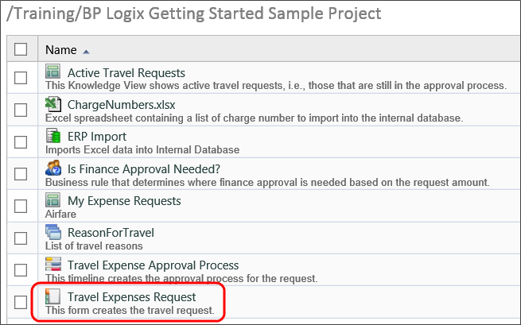
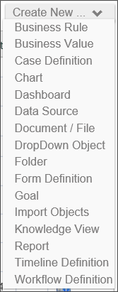
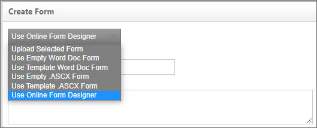
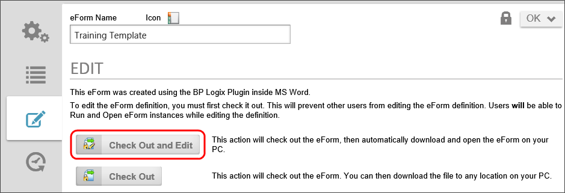
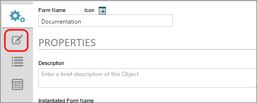
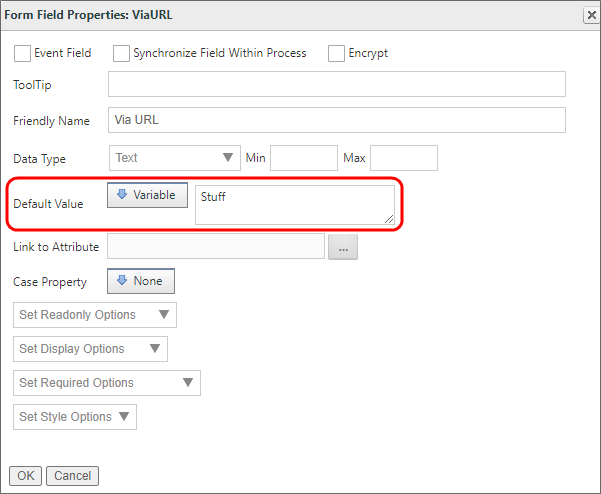
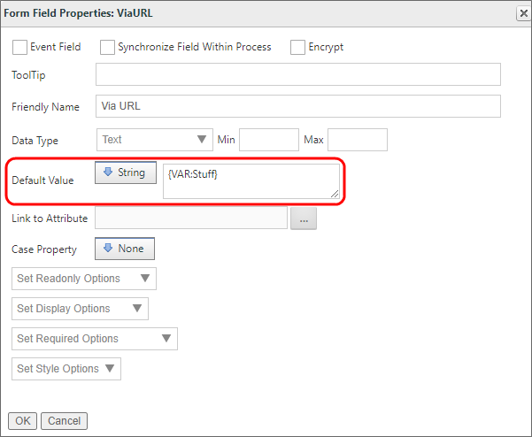
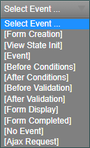

Electronic forms are web-based forms that can be published and made available to users so they can fill them out and submit them online from within their browser. When a Form is completed, it can be automatically routed using a process definition. This topic describes how to create and manage a Form, how to set the validation policies for the form fields and the optional scripting APIs that are available for interfacing with external systems and providing custom business logic.
Forms are primarily created using the Online Form Designer. Additional form-building tools are available, if necessary: the Word Form Builder or an ASP.Net development tool like Visual Studio. The Word Form Builder requires the BP Logix Word Plug-in and can only be used with a 32-bit version of Microsoft Word 2016 or lower. A Visual Studio plugin is available for using Visual Studio to create forms as ASCX custom controls, with the appropriate license option.
The Word Form Builder has reached the end of its life cycle. The BP Logix plug-in for Microsoft Word uses Microsoft's ActiveX technology, which Microsoft deprecated in 2015 with the release of the Microsoft Edge browser. With Internet Explorer's end of life on 15 Jun 22, support for both Internet Explorer and ActiveX technology from Microsoft is ended. The last version of ActiveX was released only in a 32-bit version, so you must, therefore, use a 32-bit version of Microsoft Office 2016 or earlier to use the Word plug-in.
The Word Form Builder will temporarily remain supported in the product (largely for legacy and backwards compatibility reasons), but the end of life from Microsoft means that BP Logix will not be able to support the Word Form Builder beyond 2022. BP Logix STRONGLY recommends that ALL new forms be created with the Online Form Designer, and that customers migrate existing forms to the OFD format using the conversion tool provided on the Edit tab of the form definition.
Form definitions are stored in the Process Director database. Form definitions (templates) have properties similar to other objects, such as documents.
A Form definition is made available to users through their profile, the Content List or from within a Knowledge View. The Form definition allows a user to fill out and submit form based information directly from within their browser. When a Form is submitted, the form data entered by the user is saved as a form data object in a new Form instance. This form data is stored in the Process Director database and can be evaluated by any process model. When viewing the data for a completed form the Form definition that was used to submit the information is used to display the data.
Forms In the Content List
When a Form is filled out and submitted, the data is stored in the Content List as a Form Instance under the Form definition. To view the Form instance, click on the Form instance's name or the icon in the Content List.
Form instances are similar to other objects in the Process Director database, supporting permissions, categories, properties and processes. Users must be given the appropriate permissions to view Form instances in the Content List. Users that are given View Children permission to a Form definition will automatically be given View permission to Form instances stored under that Form definition.

Adding a New Form Definition
To create a new Form definition, use the Create New dropdown in the Content List and choose the Form Definition menu item. A user must have Modify permission to the parent folder to create a Form definition. If a user does not have the appropriate permission, the hotlink will not appear.

The Create Form dialog will display, enabling you to select the Form template format you'd like to use from the dropdown. Enter a required name for the form and optionally give it a description. Click the OK button to create the form.

In nearly every case, you should use the default Online Form Designer format for creating new Forms. There are, however, several options you can select for creating your Form template:
Upload Selected Form: This option will allow you to choose a Form template that you've already created. You can choose an existing word document template or a .NET form in ASPX format.
Use Empty Word Doc Form: This option will create a blank Word document template that you can then design manually. END OF LIFE
Use Template Word Doc Form: There is an existing Word template in Process Director that contains some basic fields and instructional text. You may choose this form to use for training, or as a basis for a new production form. END OF LIFE
Use Empty .ASCX Form: This option will create a blank ASP.NET web form that uses c# as the CodeBehind programming language. This form must be edited in a C# programming IDE, like Visual Studio 2013. The ".ASCX" designation refers to the file extension for ASP.NET web forms. This option is primarily for programmers, not regular implementers.
Use Template .ASCX form: There is an existing ASP.NET web form template in Process Director that contains some basic fields and instructional text. You may choose this form to use for training, or as a basis for a new production form. This option is primarily for programmers, not regular implementers.
Use the Online Form Designer: Process Director v4.06 and higher contains a built-in Online Form Designer that you can user to create Form Templates from within the Process Director interface. This is the default option for creating new Forms.
BP Logix strongly recommends that you do not use either of the Word document options for creating new forms, as described in the note at the top of this page.
Once the form is created, if you are using the Word form builder, you can navigate to the Edit tab of the newly created form, from which you can check out and edit your Form template in Microsoft Word. Refer to the Word Form Builder section of the documentation for more information on building and modifying the Forms in Microsoft Word. If you use the Online Form Designer, you can click on the Edit tab to open the designer. Please refer to the Online Form Designer topic for more information on using it to design your Form template.
Updating a Form Definition Using the Word Builder
When a Form definition is stored on the server it provides many of the same capabilities available to documents. It supports a version history, properties, permissions, check-in and check-out, and categorization options. Users with Modify permission to a Form definition can modify or update it. To update the Form, view the properties by selecting the icon in the Content List and select the Edit button.
This will display a screen that allows the Form to be checked-out and modified, when using Internet Explorer. See the Form Builder topic for information about using other browsers.
Selecting the Check Out And Edit button will automatically check-out the Form so no other users can modify it. It will also download the Form and open the Form Builder in Microsoft Word. When you are done with your changes save and close the document. Navigate back to the server and click on the Upload and Check In. If you are going to make changes to the Form offline, or for extended periods, use the Check Out button and download the Form to your desktop. When you are done making changes, login to the server and click on the Upload New Version button that is displayed. Again, for more detailed information on editing Form Templates, refer to the Word Form Builder section of the documentation for more information

Updating a Form Definition Using the Online Form Designer #
You can immediately access the online template for any Form that was built using the Online Form Designer by clicking the Edit tab of the Form definition. Process Director will automatically check out the Form template and display it in the designer.

Form Definition URL
Forms can be linked and run from outside of Process Director using a manually-configured URL (for example, linked from your Intranet portal). The default URL can be found on at the bottom of the Form Definition's Properties page, and looks similar to this:
Where ServerName is the hostname of BP Logix, PP is the internal ID of the Partition, and NN is the internal ID of the Form Definition. For users of Process Director v5.12 and higher, the URL is displayed on this tab as a hyperlink.
A number of URL parameters can be added to the URL's existing parameters to alter the way Process Director responds to the URL request. The URL parameters may be used in any order.
The nohome parameter controls whether the home page should be opened when the link to the Task List or Form is clicked. Set nohome to 1 to ensure that the home page isn’t opened.
The completepage and completetext parameters specify the URL of the page that completing the Form should redirect to and the text displayed with the URL, respectively. When using completepage parameter, you must include the "ServerName.com//" or "https://" when specifying your URL. In other words, the URL must be a fully-qualified URL, and not just a relative path or other partial URL. Additionally, the completepage URL must, for security reasons, point to a page inside the Process Director domain. You cannot redirect to an external URL. We recommend that, if you want to direct users to an external URL, you create a custom redirect page inside the /custom folder of your process director installation, and use that page as the completepage URL. That custom redirect page can then, in turn, redirect the users to an external URL.
The completepageprompt parameter supplies the page completion prompt message. If completepageprompt=0, then the default "completed" page will NOT be displayed. If you are trying to redirect the user to a specific URL after the form is submitted, you will most likely want to suppress the "completed" page.
The prinstid parameter supplies a process instance ID to display the form instance that is associated with a specific process instance.
The findtask=1 parameter will display the form in task context. This will generally open the form in the context of the current task. Some form instances, of course, may be associated with multiple process instances, so you can give an additional hint about the process you are trying to use by adding the linkprid parameter to pass the ID of the specific process instance which you want to open in task context.
Process Director v5.39 and higher adds additional URL parameters to control how the form responds to the Save and Close button, when used.
The saveformpage and saveformtext parameters specify the URL of the page that saving the Form should redirect to and the text displayed with the URL, respectively. The usage specifics of the completepageprompt and completetext parameters listed above also apply to this parameter.
The saveformpageprompt parameter supplies the page save prompt message. If saveformpageprompt=0, then the default "completed" page will NOT be displayed. If you are trying to redirect the user to a specific URL after the form is saved, you will most likely want to suppress the "completed" page.
You can also set the value of Form fields in the URL that will default or override the values for the specified fields. For security reasons, you will need to specify the fields you want to set via URL parameter beforehand. There are two methods for setting the value via a URL parameter.
Setting a default value
If you only need to set the default value of a field via URL for a new Form instance, you can use the following procedure to configure the field.
In the Form Fields tab of the Form definition, open the field properties for the field you wish to set. You must set a variable as the default value, and there are two ways to do this:
Set the Default Value as a Variable, then enter the name you'd like to use for the variable:

Set the default value to a string, and enter a generic variable into the field, using the syntax {VAR:VarName, modifier=ModifierValue}.

Using the VAR object in a text string enables you to add additional modifiers to the variable. For instance, the syntax {VAR:VarName, null="Value if null"} specifies the value to use if the URL parameter is not present.
The VAR (Variable) object is an ad-hoc variable whose primary use is to serve as a placeholder for the value passed via the URL Parameter. This is the same implementation procedure used when passing values to a Knowledge View in a URL.
No matter which of the two methods above that you implement, you can now use the Variable as a URL parameter. In the case of the above example, the Parameter would be
The default value will be filled with the value specified in the URL parameter.
This procedure is the simplest method for setting a field's value, and it does not require any further configuration. The drawback to this method is that it can only be used to set the default value of a field in a new Form instance, and so will not change a field value that has already been saved in an existing Form instance.
If you wish to set the value in an existing Form, you will need to use the next method.
Setting a Field Value Universally
This method enables you to set a field value via URL parameter at any time. For security reasons, however, you must first identify the field by setting the field name as configurable via URL in the Custom Vars file (vars.cs.ascx), using the FormFieldsAllowDisabledURLUpdate method.
Once you have specified the field name in the Custom vars file, you can now use a URL parameter to set the value any time you desire. In the URL parameter, the field is identified using the prefix "EXT_ ", followed by the field name, to identify the field, e.g., "EXT_FieldName".
Be sure to URL encode the values you specify in the URL Parameter.
Example:
In the Custom Vars file, identify the fields to change via URL Parameter:
public override void PreSetSystemVars(BPLogix.WorkflowDirector.SDK.bp bp) { //Fields to set via URL Parameter bp.Vars.FormFieldsAllowDisabledURLUpdate.Add("Field1"); bp.Vars.FormFieldsAllowDisabledURLUpdate.Add("Field2"); }
Now, you can use the following URL parameters to set the field values:
Forms can be locked by users, preventing other users from making changes to that instance of the form while the form is still locked. If a user views a form that is unlocked, but for which form locking is enabled, the form will be locked for all users except that user. The form remains locked until the user leaves the form. If another user views a locked form, all controls will appear disabled. You can display text for users viewing a locked form and optionally allow them to unlock a locked form using the Lock Form control.
To enable form locking, select the Enable Form Locking checkbox in the Options section of the Form definition's Properties tab.
Form locking can be problematic in some cases. If one user needs to review the form, without making changes, while another user in the process is trying to complete a task, the reviewer would lock the form, preventing the task assignee from completing his work. If multiple users can access the form, then the user that opens the form first will lock the others out.
For this reason, the Form definition allows you to create conditions on the Entire form is read-only when option. This option allows you to determine conditions when the form can be made read-only. This prevents editing in specified circumstances, without locking the form for all users.
Form Events are actions that occur on a form, to which you can add custom actions of your own. Many events fire automatically as part of the form's natural life cycle. For instance, when a form is first opened, an event called Form Creation is fired. Some events, on the other hand, are manually fired. A Button control, for example, has an event that fires when the button is clicked, and this event is built into the Button control automatically. Additionally, form input controls can also be set as an Event Field in the properties you configure on the Form Controls tab of the Form definition. These controls will fire an event when the data in the control is changed. Any time an event fires, you can configure an action to run on the event, such as a Set Form Data action, or running a Custom Task. For example, you might place a Button control on a form, and on the event for that button, run a Custom Task that converts the form to a PDF document.
Form events can be accessed from a Dropdown control that lists all of the available events on the form. This dropdown is primarily used on the Set Form Data and Custom Task Event Mapping tabs, though it appears anywhere that an event is applicable.

This dropdown displays all of the available events that can be used to attach actions to the Form. By default, the dropdown shows only the events built into the form's life cycle, but any buttons or other event controls you place on the form will be automatically added to the selections displayed in the dropdown. The table below describes the default events that occur as part of the form's life cycle.
Event
Description
Form Creation
Fired when a Form instance is called for display.
View State Init
Fired on the preparation of the Form for display.
Event
Fired on any Event
Before Conditions
Fired before any Form conditions, such as visibility or enabling conditions on controls, are called.
After Conditions
Fired after all Form conditions have been processed.
Before Validation
Fired when the Form has been submitted, but before any Form validation conditions are evaluated.
After Validation
Fired after all validation conditions have been processed.
Form Display
Fired when the form is actually displayed in the browser. All Fill Dropdown actions, form calculations for Calculation and Sum controls, and other automated form update events, are automatically processed on the Display event.
Form Completed
Fired after the form's display has been ended (i.e., when the form closes), and just prior to the form being disposed from memory.
No Event
Placeholder to prevent an action from firing on any event.
Ajax Request
Fired when a client-side JavaScript Ajax request is processed.
So far, we've just talked about Form events in the context of the user interface, but Process Director also enables custom scripts to be run, and the script actions also run on the same events that UI configuration uses. Additionally, Custom Tasks also run on the same events.
The order of operations for these different actions is:
Custom scripts: Scripted actions always run first on any event.
UI and Datasets: After the custom scripts complete, the UI or Dataset actions, such as Set Form Data or Fill Dropdowns, will run.
Custom Tasks: Custom Task run after all other actions.
The order in which the actions run is very important. For instance, if you want to configure the Set Form Data tab to run an action that is based on some data pulled from a Custom Task, you cannot run both the Set Form Data action and the Custom Task action on the same event. The Custom Task will not run before the Set Form Data action, only after it. In such a case, you might have to run two Custom Tasks, with the first Custom Task retrieving the data, then running the Set Form Data Custom task second, to ensure that the operations happen in the order you desire.
Additional advanced information on Form events from a scripting perspective can be found in the Custom Scripting and Form Class documentation in the Developer's Guide.
 The Word Form Builder has reached the end of its life cycle. The BP Logix plug-in for Microsoft Word uses Microsoft's ActiveX technology, which Microsoft deprecated in 2015 with the release of the Microsoft Edge browser. With Internet Explorer's end of life on 15 Jun 22, support for both Internet Explorer and ActiveX technology from Microsoft is ended. The last version of ActiveX was released only in a 32-bit version, so you must, therefore, use a 32-bit version of Microsoft Office 2016 or earlier to use the Word plug-in.
The Word Form Builder has reached the end of its life cycle. The BP Logix plug-in for Microsoft Word uses Microsoft's ActiveX technology, which Microsoft deprecated in 2015 with the release of the Microsoft Edge browser. With Internet Explorer's end of life on 15 Jun 22, support for both Internet Explorer and ActiveX technology from Microsoft is ended. The last version of ActiveX was released only in a 32-bit version, so you must, therefore, use a 32-bit version of Microsoft Office 2016 or earlier to use the Word plug-in.